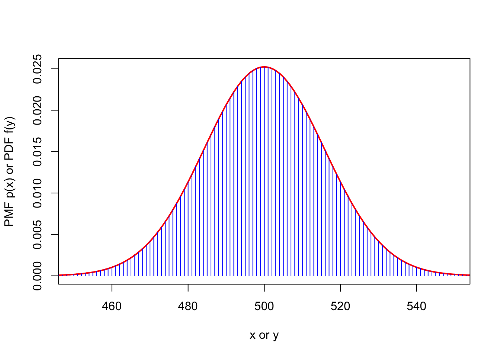

sum(dbinom(495:505, 1000, 1/2))[1] 0.2720284There will be no lecture on Wednesday 30 November, as the UCU are on strike. Instead, you should learn the material that would have been given in the lecture from these notes. This material is fully examinable, as much as any other lecture.
I have provided some old pandemic-era videos embedded in these notes, which may help you – the section numbering has changed since these videos were made, but the material is mostly the same. Drop-in sessions are available on Thursday (2pm in PRD 9.320 and 4pm in Roger Stevens LT17) if you struggle with anything in this lecture.
In this lecture we will look at some “limit” results; that is, results about a large number of \(n\) of random variables, as \(n\) tends to infinity. We will be looking at the case when the random variables are independent and identically distributed (IID), which represents the case of multiple repeated experiments.
So let \(X_1, X_2, \dots, X_n\) be a sequence of IID random variables. Let us write \(\mu = \mathbb EX_1\) for the common expectation and \(\sigma^2 = \Var(X_1)\) for the common variance.
At the beginning of the course, we saw the mean of some values \(x_1, x_2, \dots, x_n\) was [ x = (x_1 + x_2 + + x_n) = {i=1}^n x_i ; ] that is, what we get if we add them up and divide by \(n\). In the same way, we could calculate the “mean” of some random variables \(X_1, X_2, \dots, X_n\) by adding them up and dividing by \(n\); that is: [ X_n = (X_1 + X_2 + + X_n) = {i=1}^n X_i . ] (The subscript \(n\) on “\(\overline X_n\)” is just to remind us this is a mean of \(n\) random variables.)
Here, each of the \(X_i\)s is a random variable, so their mean \(\overline X_n\) is another random variable too. This mean random variable \(\overline X_n\) will be out main object in this lecture. We can ask questions about the random variable \(\overline X_n\) just the same as we would ask about any other random variable. For example: What is its expectation and variance?
The expectation of \(\bar X_n\) is \[\begin{align*} \mathbb E \overline X_n &= \mathbb E \left( \frac{1}{n} (X_1 + X_2 + \cdots + X_n)\right) \\ &= \frac{1}{n} (\mathbb EX_1 + \mathbb EX_2 + \cdots + \mathbb EX_n)\\ &= \frac{1}{n} (\mu + \mu + \cdots + \mu)\\ &= \frac{1}{n} n \mu \\ &= \mu . \end{align*}\] Here we used linearity of expectation to take the \(1/n\) out of the brackets and to add up the individual expectations.
In the same way, the variance of \(\overline X_n\) is \[\begin{align*} \Var( \overline X_n) &= \Var \left( \frac{1}{n} (X_1 + X_2 + \cdots + X_n)\right) \\ &= \left(\frac{1}{n}\right)^2 \Var(X_1 + X_2 + \cdots + X_n) \\ &= \frac{1}{n^2} \big(\Var(X_1) + \Var(X_2) + \cdots + \Var (X_n)\big)\\ &= \frac{1}{n^2} (\sigma^2 + \sigma^2+ \cdots + \sigma^2)\\ &= \frac{1}{n^2} n \sigma^2 \\ &= \frac{\sigma^2}{n} . \end{align*}\] Here, we crucially used the fact that the random variables are independent to write the variance of the sum as a sum of the variances.
In conclusion we have this:
Let \(X_1, X_2, \dots, X_n\) be a sequence of IID random variables, and write \(\mu = \mathbb EX_1\) for the common expectation and \(\sigma^2 = \Var(X_1)\) for the common variance. Further, write \(\overline X_n =\frac{1}{n} \sum_{i=1}^n X_i\) for the mean of these random variables. Then [ E X_n = (X_n) = . ]
Now think about what happens to this mean \(\overline X_n\) when \(n\) gets very large. We see that the expectation \(\mathbb E\overline X_n = \mu\) stays the same, but the variance \(\Var(\overline X_n) = \sigma^2/n\) gets smaller and smaller as \(n\) gets bigger. So the range of probable values for \(\overline X_n\) will be squeezing tighter and tighter around \(\mu\). Given that, it seems as if (and it can be rigorously proven that) we have the “law of large numbers”.
Let \(X_1, X_2, \dots\) be a sequence of IID random variables. Write \(\mu = \mathbb EX_1\) for the common expectation and \(\overline X_n =\frac{1}{n} \sum_{i=1}^n X_i\) for the mean of the first \(n\) random variables. Then [ X_n ; ] by which we mean that, for any \(\epsilon > 0\), [ P(|X_n - | > ) ]
The precise mathematical definition of the convergence is not important here. What is important is the general principle that the mean \(\overline X_n\) is overwhelmingly likely to get closer and closer to the expectation \(\mathbb EX = \mu\). In other words, the expectation \(\mathbb EX = \mu\) represents the “long-run average” of independent experiments – this justifies referring to the expectation as a kind of average.
One special case is if we have repeated experiments that succeed with probability \(p\); that is, \(X_n \sim \text{Bern}(p)\). Then the law of large numbers says that the long-run proportion of successes is [ _{i = 1}^n X_n = X_n EX_1 = p . ] So the long-run proportion of times an event happens converges to its probability. This goes back to what we said about “frequentist probability” right at the beginning of Lecture 3: that one way to understand the probability of an event is as the long-run frequency of its occurrence.
We have seen that if the \(X_i\) are IID random variables with expectation \(\mu\) and variance \(\sigma^2\), then [ EX_n = (X_n) = ] and the law of large numbers tells us that \(\overline X_n \to \mu\) as \(n \to \infty\). Alternatively, we could say that \(\overline X_n - \mu \to 0\).
We might also want to know what the variation of \(\overline X_n - \mu\) is around 0. Obviously, the law of large numbers tells us this variation shrinks away to 0, but we might be interested in the “shape” of that variation as it shrinks away. To study this variation, we need to “re-inflate” it, to stop it disappearing. It turns out that the correct way to do this is by multiplying by \(\sqrt{n}\) and looking at \(\sqrt{n}(\overline X_n - \mu)\).
It’s fairly easy to check that the expectation and variance of the “re-inflated variation” is \[\begin{align*} \mathbb E\sqrt{n} (\overline X_n - \mu) &= \sqrt{n}(\mu - \mu) = 0 \\ \Var\big(\sqrt{n} (\overline X_n - \mu)\big) &= (\sqrt n)^2 \, \frac{\sigma^2}{n} = \sigma^2 . \end{align*}\] So whatever distribution \(\sqrt{n}(\overline X_n - \mu)\) has, that distribution must have expectation \(0\) and variance \(\sigma^2\). But in fact, no matter what distribution the \(X_i\) have and regardless of whether they are discrete or continuous, this “variation around 0” \(\sqrt{n}(\overline X_n - \mu)\) always gets closer and closer to the normal distribution!
Let \(X_1, X_2, \dots\) be a sequence of IID random variables. Write \(\mu = \mathbb EX_1\) for the common expectation, \(\sigma^2 = \Var(X_1)\) for the common variance, and \(\overline X_n =\frac{1}{n} \sum_{i=1}^n X_i\) for the mean of the first \(n\) random variables. Then [ (X_n - ) N(0, ^2) ; ] by which we mean that, if \(Y \sim \mathrm N(0, \sigma^2)\), then, for all \(a < b\), [ P(a (X_n - ) b ) P(a Y b) ]
(A full proof of the central limit theorem is too complicated to include here.)
Another alternative way to write this is to divide both sides by \(\sigma\) and write it as [ N(0, 1) . ]
The result we have stated, for IID random variables, is the most important case of the central limit theorem. But central limit theorems can be proved for other cases too – the rough principle is that if you have lots of random variables most of which are independent (or only weakly dependent) and none of which are individually too big, then the mean or sum will be approximately normally distributed.
There are many other distributions \(X\) that can be well approximated by a normal distribution where \(\mu\) is set to \(\mathbb EX\) and \(\sigma^2\) is set to \(\Var(X)\). Using intuition from the central limit theorem, this is roughly when the distribution can be expressed as the accumulation of many small effects.
We already know, of course, that a sum of independent normal distributions is exactly normal, with no approximations needed.
Suppose I toss 1000 coins. What’s the probability I get between 495 and 505 Heads?
The true distribution of Heads is \(X \sim \mathrm{Bin}(1000, \frac12)\), and the question wants [ P(495 X ) = _{x = 495}^{505} p_X(x) . ] We can calculate the exact answer using R:
sum(dbinom(495:505, 1000, 1/2))[1] 0.2720284However, we could instead use a normal approximation (which, again, would be useful in Victorian times or in an exam). Since \(\mathbb EX = 1000 \times \frac12 = 500\) and \(\Var(X) = 1000 \times \frac12 \times \frac12 = 250\), we have the normal approximation \(Y \sim \mathrm N(500, 250)\). The figure below shows the PMF of the discrete distribution \(X \sim \mathrm{Bin}(1000, \frac12)\) (blue bars) and the PDF of the continuous approximation \(Y\sim \mathrm N(500, 250)\) (red line) between 450 and 550 – it is an extremely close match!

We could then calculate [ P(495 X ) P(495 Y ) . ] We could standardise and use the statistical tables, or just use R:
pnorm(505, 500, sqrt(250)) - pnorm(495, 500, sqrt(250))[1] 0.2481704This is not too far off the correct answer \(0.272\) we calculated exactly, but it does miss by about 9%.
Note, though, that we approximated the discrete random variable \(X\) by a continuous random variable \(Y\). So the next possibility for \(X\) above 505 was 506 and below 495 was 494, whereas \(Y\) could smoothly vary between the two. So we usually get a more accurate approximation if we use a continuity correction and round outwards halfway to the next discrete point. So we should get a better approximation from [ P(495 X ) P(494.5 Y ) . ]
Calculating this in R (or with statistical tables) we get
pnorm(505.5, 500, sqrt(250)) - pnorm(494.5, 500, sqrt(250))[1] 0.2720476Using the continuity correction, we now have an incredibly accurate approximation – it only misses by 0.006%.
Whenever we approximate a discrete random variable by a continuous random variable (such as a normal distribution), using a continuity correction – that is, rounding halfway to the next discrete point – typically makes the approximation more accurate. If \(X\) is a discrete random variable that takes integer values and \(Y\) is a continuous approximation, then the appropriate continuity corrections are \[\begin{align*} \mathbb P(X \leq n) &\approx \mathbb P(Y \leq n + \tfrac12) & \mathbb P(X \geq n) &\approx \mathbb P(Y \geq n - \tfrac12) \\ \mathbb P(X < n) &\approx \mathbb P(Y < n - \tfrac12) & \mathbb P(X > n) &\approx \mathbb P(Y > n + \tfrac12) \end{align*}\]